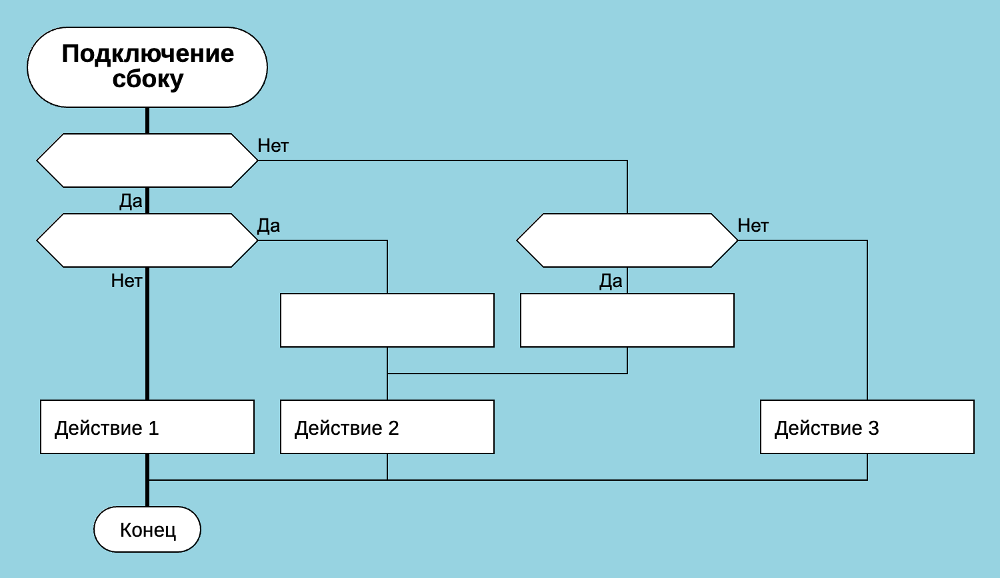
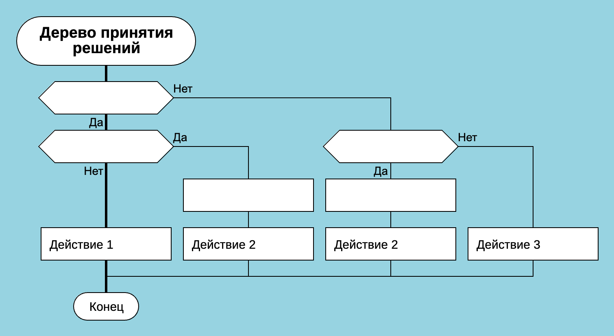

Как программировать на ДРАКОНе
или Как не нужно использовать ДРАКОН

ДРАКОН улучшает читаемость алгоритмов, но не отменяет общие законы разработки программ.
Эта статья написана на основе практического опыта программирования на языке ДРАКОН. Здесь приведены итоги, к которым автор пришел после нескольких лет разработки с применением этого визуального языка.
Данные программы, связанные с языком ДРАКОН, были полностью или частично написаны на ДРАКОНе:
- Drakon Editor. Частично написан в Drakon Editor.
- ДраконТех. Написан частично в Drakon Editor, частично в ДраконТех.
- DrakonWidget/DrakonHub. Полностью написан в ДраконТех.
Рисуйте простые диаграммы
ДраконТех позволяет строить дракон-схемы быстро и легко. Не злоупотребляйте этим. Старайтесь не перегружать свои диаграммы. ДРАКОН даёт возможность создавать понятные алгоритмы, но не гарантирует этого. Многое зависит от вашего чувства меры.
Несколько простых советов:
Не допускайте огромных по высоте диаграмм. Длинные методы в традиционном текстовом программировании трудно читать. То же самое относится к непомерно высоким дракон-схемам. Если диаграмма выросла выше экрана, применяйте декомпозицию или сделайте из диаграммы силуэт.
Избегайте слишком большого количества веток в силуэте. Силуэт не обязан помещаться на экран по горизонтали. Хотя хорошо, если каждая из его веток помещается. Но всё-таки важно не позволять силуэту бесконечно расти вправо. Количество веток в силуэте не должно быть слишком большим. 10 веток — это уже опасно. Развивайте чувство меры.
Ограничивайте алгоритмическую сложность. Это относится как к схемам-примитивам, так и к веткам силуэта. ДРАКОН представляет алгоритмы более понятным способом, чем текст с отступами. Тем не менее, следует направлять все силы на устранение излишней сложности. Постоянно задавайте себе вопрос: я развязал этот алгоритм или завязал? Стало понятнее или стало хуже?
Избегайте лишних изломов линий и необычных трюков. ДРАКОН позволяет снизить повторы в сложных алгоритмах. Иногда это делается за счёт появления дополнительных изгибов линий или нестандартных соединений элементов. Не стоит любой ценой истреблять повторы. Иногда читателю легче воспринимать повторы, чем напрягать зрение, чтобы выяснить, что значит данное хитросплетение. Хорошим паттерном в ДРАКОНе является дерево принятия решений. Пример плохого паттерна — подключение сбоку.


Подключение сбоку допустимо, но оно увеличивает когнитивный труд читателя диаграммы.
Следуйте стандартным правилам программирования
Применение ДРАКОНа не означает, что можно перестать следовать общепринятым практикам разработки софта. Все полезные советы программистам работают одинаково хорошо как в текстовом, так и в визуальном программировании.
Примеры общеизвестных рекомендаций, которые помогают в составлении дракон-схем:
- Алгоритм должен решать только одну задачу. При составлении ДРАКОН-схемы нужно чётко понимать её цель. Эта цель должна быть одна. Название диаграммы должно отражать цель. Если вы не можете объяснить своей кошке, что делает данный алгоритм, надо делать декомпозицию.
- Программируйте сверху-вниз. Начинайте с высокоуровневой логики и делайте вид, что все подпрограммы уже существуют. Это даст вам лучшее понимание проблемы в самом начале работы, а не в конце. И вы получите исчерпывающий список требуемых подпрограмм с их названиями и сигнатурами. К счастью, ДраконТех может автоматически сгенерировать пустую функцию с нужной сигнатурой (через контекстное меню). Продолжайте в том же духе с подпрограммами. Это ускорит разработку раз наверное в сто. Но ещё лучше то, что подход сверху-вниз помогает записать намерение. Понятность намерения — основа написания лёгких в поддержке программ.
- Алгоритм должен работать на одном уровне абстракции. Действия, производимые на диаграмме, не должны прыгать по разным уровням абстракции. Если ваша дракон-схема занимается управлением диалогами на верхнем уровне, не нужно в ней вызывать низкоуровневые функции типа element.style.display = “inline-block” или name.toLowerCase(). Просто удивительно, как легко нарушение уровней абстракции уничтожает преимущества графического представления алгоритмов.
- Избегайте нескольких вызовов функций в одном выражении. Идеально: один вызов — одна строка кода. Не бойтесь временных переменных. Вы скажете себе спасибо во время отладки.
- Если несколько действий составляют одно логическое целое, поместите их в одну икону “Действие”. При этом следуйте общему правилу ДРАКОНа: одна икона — одна мысль.
Продумайте архитектуру
Применение ДРАКОНа не означает, что можно перестать думать. ДРАКОН может помочь прийти к хорошей архитектуре, потому что он визуально показывает, что программа делает. Тем не менее необходимость тщательно продумывать архитектуру остаётся.
Архитектура программного обеспечение — обширная тема. Здесь мы приведем только некоторые соображения, полезные при разработке в ДраконТех.
Избегайте гигантских модулей. ДраконТех позволяет работать с проектами, в которых сотни и тысячи диаграмм. Это не значит, что разработчику легко ориентироваться в модуле, который пытается объять необъятное. Модуль, как и алгоритм, должен иметь чётко очерченную зону ответственности.
Видимые точки входа — залог успеха. Каждый модуль реализует конечное количество алгоритмов, запускаемых извне. Эти алгоритмы опираются на закрытые функции модуля. Категорически важно облегчить поиск и нахождение точек входа в эти алгоритмы. Для этого нужно собрать все экспортируемые функции в одной папке. Пример — корневая папка проекта или специальная папка с каким-нибудь говорящим названием, например “API”. Важно не смешивать открытые и закрытые функции в одной папке.
В пользовательских интерфейсах есть дополнительный тип точек входа — функции обратного вызова, или коллбэки (callbacks). Коллбэки привязываются к событиям, которые порождает пользователь. Коллбэки — полноценные точки входа наравне с экспортируемыми функциями. Их обязательно нужно помещать в отдельную папку.
Избегайте классов, которые применяются только внутри модуля. Дополнительные стенки инкапсуляции внутри модуля скорее вредят, чем помогают. Излишняя инкапсуляция делает код слишком бюрократическим. Если компонент будет работать только внутри своего модуля, не нужно превращать его в класс.
Если нужен полиморфизм, применяйте другие методы. Пример: в объектах с полиморфным поведением можно помещать поле “тип”. Отдельно от этих объектов можно создать словарь, который будет возвращать нужную функцию в зависимости от типа объекта.
Язык ДРАКОН не навязывает такой подход, но подобные методы будут хорошо работать в ДраконТех, потому что ДраконТех поощряет процедурный стиль.
Не редактируйте сгенерированный код
ДраконТех старается генерировать код, удобный для отладки. При этом нужно взять железное правило: не изменять вручную код, сгенерированный машиной. Это приведёт к появлению двух источников истины. Две истины обязательно войдут в противоречие, и тогда они превратятся в две лжи.
Вывод
ДРАКОН — профессиональный инструмент, а не волшебная палочка.
Он помогает делать алгоритмы более понятными. Но это не значит, что можно перестать думать. Если алгоритм плохой, ДРАКОН не сделает его хорошим. Если архитектура плохая, ДРАКОН её не спасёт. Однако хороший замысел ДРАКОН делает заметнее, а ошибки — виднее.
Диаграммы в ДраконТех строятся быстро. Очень быстро. Возникает соблазн напихать в одну схему всё подряд. Сопротивляйтесь этому соблазну. Лучше десять маленьких диаграмм, чем одна большая и непонятная.
ДРАКОН не отменяет архитектуру. Не отменяет декомпозицию. Не отменяет здравый смысл. А по поводу рисования схем главный совет такой: рисуйте проще. Если кажется, что можно ещё упростить — скорее всего, можно.